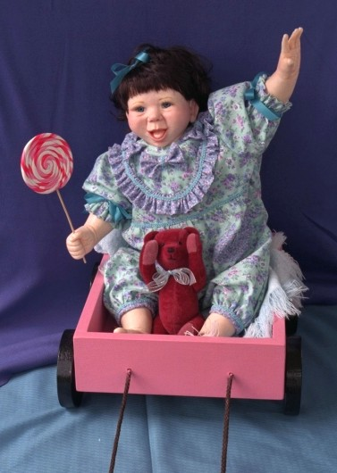
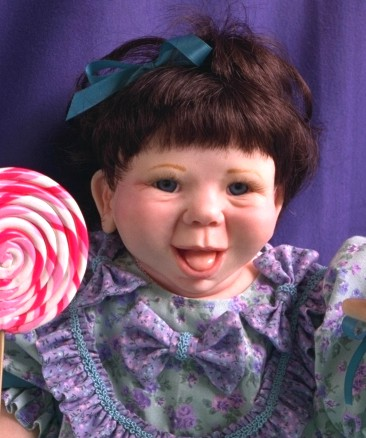

"Butterball"
 "Butterball" is actually a portrait of the artist as a baby. As a child, I always loved those huge lollipops, and enjoyed the challenge of creating a permanent one. "Butterball" now stays with the artist's mom, as she should!
